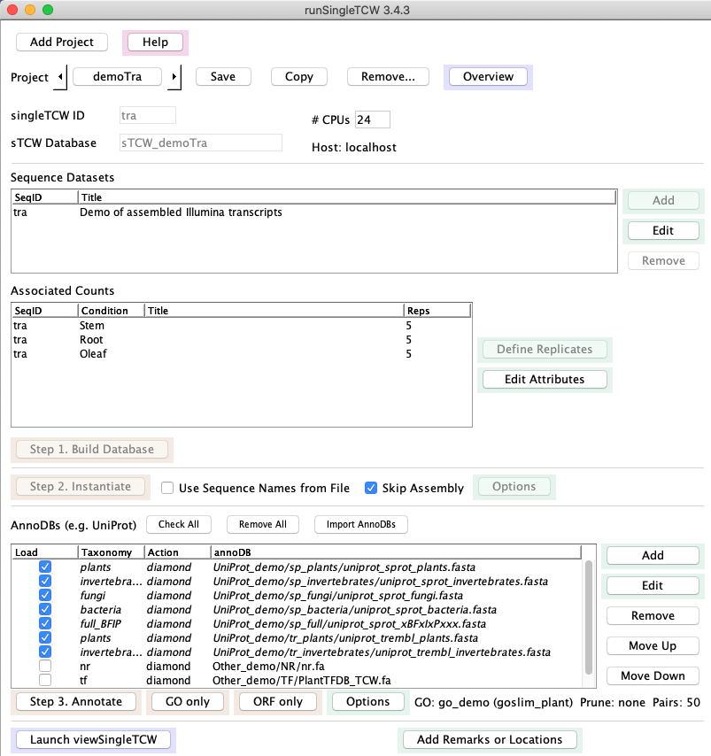
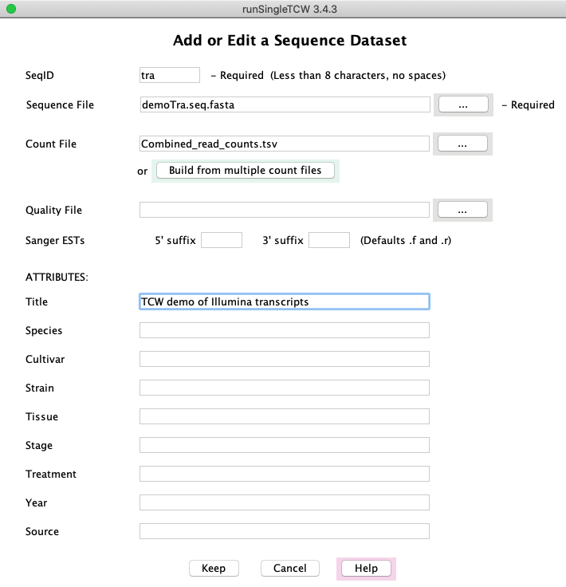
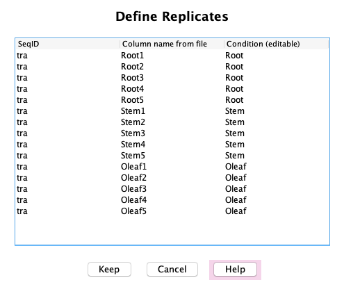
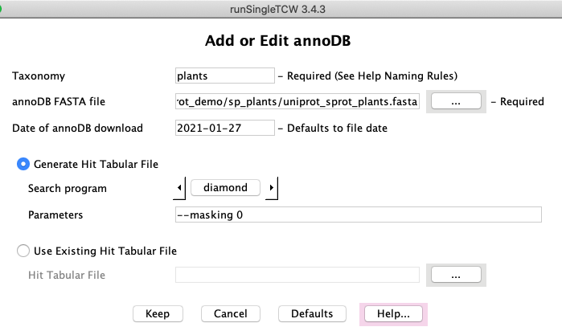
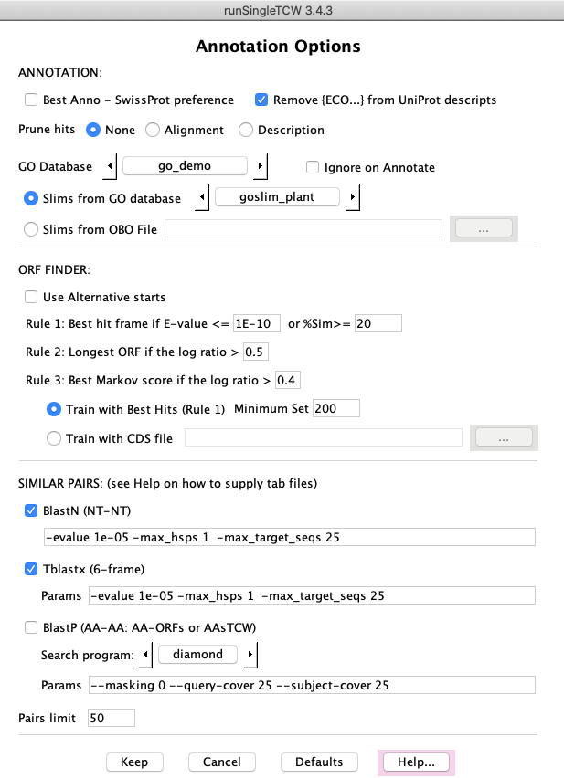

|
runSingleTCW - Build Annotated Database of Single Species
runSingleTCW takes as input transcriptome and expression level files, builds a
database, and annotates the transcriptomes.
See sTCW UserGuide for details.
Main panel
|
→ 1. Build Database
The input may be transcripts with optional read counts, proteins with optional spectral counts,
or sequences to be assembled.
The Add panel allows you to specify the sequence dataset (fasta file)
along with its conditions (e.g. tissue, treatment, etc),
which will be listed under Associated Counts on the main panel.
If there are replicates, you may define them with the Define Replicates panel.
→ 2. Instantiate
Skip Assembly - the sequences can be instantiated with no assembly.
Assembly - the sequences, such as Sanger ESTs, 454 reads, and/or transcript,
can be assembled.
|

|
→ 3. Annotate
Use runAS
to download and format UniProts and the GO databases for input into this step.
Search against one or more protein (e.g. UniProt) or nucleotide databases,
referred toa "annoDBs".
In the Options panel, define the GO database.
→ 4. Add Remarks and Locations
Remarks and Locations (i.e. chromosome, start, end, strand) can be added to sequences and queried in the viewSingleTCW.
|
Sequence Datasets
Add/Edit: Selecting Add shows this panel.
Selecting Edit shows
a similar panel, but only the ATTRIBUTES values can be changed after the database has been created.
The counts can be in one file or generated with the Build combined count file option.
On Save, the condition names will be written in the Associated Counts table on the
main panel.
Build combined count file file: (panel not shown) If the counts are in multiple files, this button opens up a
panel in which a directory of count files, or individual count files, can be entered.
It will generate a file called Combined_read_count.tsv
where the columns are conditions with their respective counts.
|

|
|
Associated Counts
Define Replicates: If the Associated Counts table has replicates,
they can be defined in this panel, which will update the table as shown above in the Main panel.
Edit Attributes: (panel not shown) This panel has the same attributes fields as the
Add or Edit a Sequence Dataset, but will be applied to the selected condition. These can
be edited after the database has been created.
|

|
|
AnnoDBs
Add/Edit: Databases to search against are referred to as "annoDBs".
Any FASTA file can be used an annoDB, though TCW gives special support to using UniProt taxonomic
databases; besides allowing taxonomic specific querying in viewSingleTCW,
the UniProt .dat file is used to extract GO, KEGG, EC and PFam information.
The runAS
program provides this functionality.
As the UniProt TrEMBL databases increase in size, it has
become impractical to search these with BLAST1. Fortunately, the
diamond2
programs provide super fast results.
|

|
|
AnnoDB Options
ANNOTATIONS: An option of special interest is the Prune option. The results of the
search against annoDBs can result in many hits, where some have the exact same alignment values and many have
the very similar descriptions. The Alignment option removes all but the best hit with the same
alignment and description values, and the Description option removes all but the best hit with
same description values.
ORF FINDER:The ORF Finder uses the seq-hit frame to determine the best open reading frame. If
a sequence has no hits or hits to multiple frame, it decides the best frame using the ORF length and the
Markov score. The Markov scores are trained using the best hits over all sequences.
SIMILAR PAIRS: This is useful to determine how similar the input sequences are.
|

|
- BLAST is used for assembly, annotation and interactive searching in viewSingleTCW.
Altschul SF, Madden TL, Schaffer AA, Zhang J, Zhang Z, et al. (1997) Gapped BLAST and PSI-BLAST: a new generation of protein database search programs. Nucleic Acids Res 25: 3389-3402.
- Diamond can be used for annotation of blastx and blastp searches.
Buchfink B, Xie C, Huson D (2015) Fast and Sensitive Protein Alignment
using DIAMOND, Nature Methods, 12, 59-60 doi:10.1038/nmeth.3176.
- CAP3 is used for assembly.
Huang X, Madan A (1999) CAP3: A DNA sequence assembly program. Genome Res 9: 868-877.
- UniProt is recommended for protein annotation as the GO and other information can
be extracted by the TCW and added to the database.
Dimmer EC, Huntley RP, Alam-Faruque Y, Sawford T, O'Donovan C, et al. (2012) The UniProt-GO Annotation database in 2011. Nucleic Acids Res 40: D565-570.
- Gene Ontology mySQL database is used for levels and descriptions.
GO Consortium (2012) The Gene Ontology: enhancements for 2011. Nucleic Acids Res 40: D559-564.
|


{kind=link}
{kind=link}
{kind=link}
{kind=link}
{kind=link}